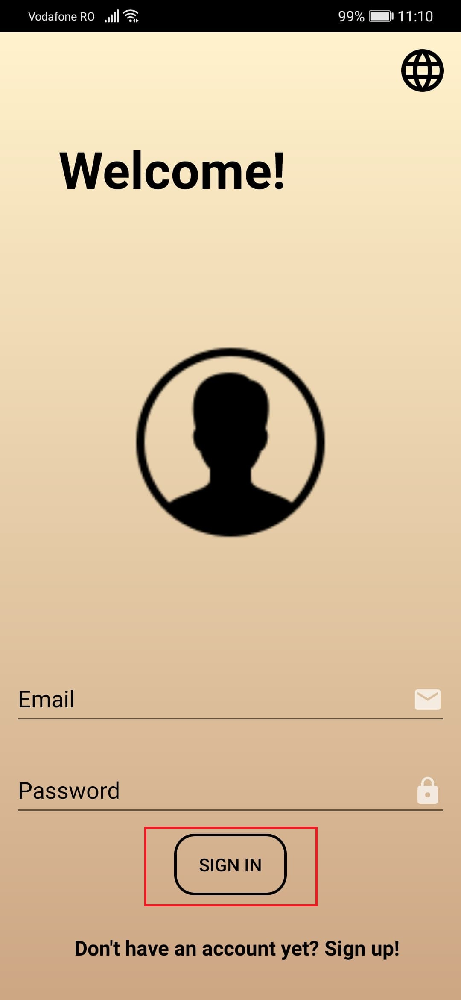

Log in
În momentul în care un utilizator accesează aplicația, acesta este introdus automat în pagina de logare. Pagina de logare presupune două câmpuri: Email și Parolă.

În câmpurile menționate se vor introduce credențialele aferente fiecăruia, după care se apasă butonul de Sign in.
În continuare, utilizatorul va fi redirecționat către pagina CATALOG din cadrul aplicației.
Dacă nu utilizatorul nu are un cont deja creat, trebuie apăsat butonul "Sign up!", ce îl va redirecționa către pagina Creare Cont.